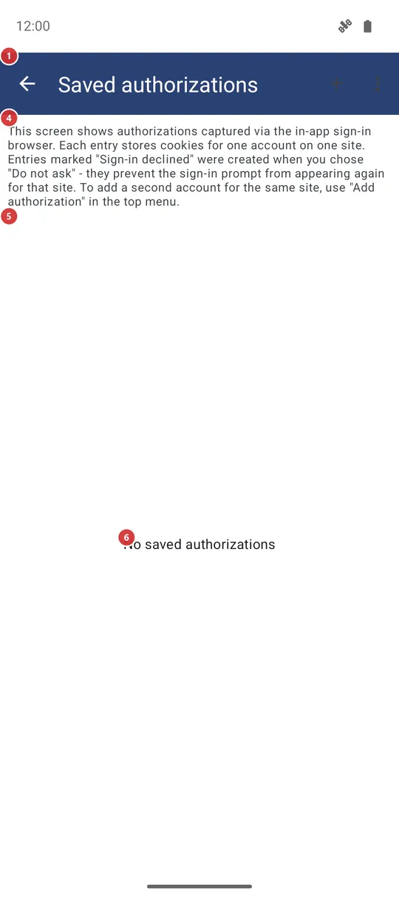
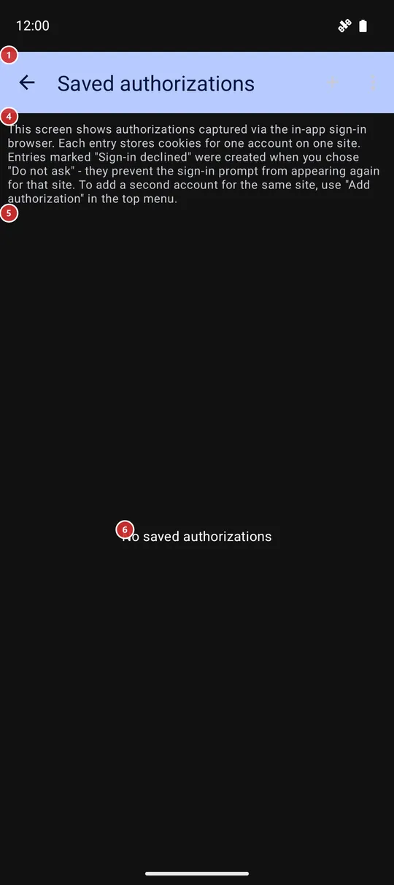

Saved authorizations
What this is for
Saved authorizations lists the sign-ins that the in-app web browser keeps for websites, so the app can fetch content from sites that need an account without asking you to sign in again. Here you add, rename, renew and delete them. Open it from Settings, General tab, Authorization and accounts.


In this order
- Press + Add authorization 2 and choose a site from the list, or Enter address manually for another one.
- Sign in on the page that opens 12 the way you would in a browser, then press Save authorization 13.
- Give the account a name you will recognize 15 and press Save.
- The account appears under its site in the list 5. To add a second account for the same site, press the plus in the site's header 7.
- When a site stops accepting a saved sign-in, press Sign in again 9. Rename account 10 changes only the name shown here.
- Delete saved authorization 11 removes a sign-in you no longer need, after you confirm.
- Nothing on this screen needs saving: every change applies at once, and Back 1 simply leaves.
The elements
The list
1BackLeaves the list.
Everything on this screen is applied the moment you do it, so there is nothing to confirm when you leave.
2+ Add authorizationStarts a new sign-in for a website.
The first choice is a list of known sites; the last line, Enter address manually, asks for a full web address that starts with http or https. After you pick a site, its sign-in page opens in the sign-in window described at the end of this page. Addresses on Google domains open in a Custom Tabs browser instead; if no such browser is installed, a Browser needed window explains what to install.
4ExplanationA short reminder of what a saved authorization is.
Each entry stores the cookies of one account on one site. An entry marked Not authorized (you declined) was created when you chose Do not ask in a sign-in prompt, and it stops the prompt from appearing for that site again. To add a second account for the same site, use + Add authorization or the plus in the site's header.
5Sign-in listAll saved sign-ins, grouped by site.
Every site has a header with its name; Instagram, Threads and Facebook are recognized by name, other sites show their address. The accounts of that site follow the header. The list stays empty until you save your first sign-in.
6No saved authorizationsTells you that nothing is saved yet.
The note replaces the list while there are no entries. Press + Add authorization in the toolbar to save the first one.
Sites and accounts
7Add another accountAdds another account for the same site.
The plus in a site's header opens that site's sign-in page. Use it when you have two accounts on one site and want both to be available.
8Account entryOne saved sign-in: its name and its details.
Under the name, a grey line shows how many cookies are stored, when the entry was saved and when it was last used, or not yet used. An entry called Not authorized (you declined) is not a real sign-in: it only remembers that you declined to sign in to that site, so the app stops offering. It has the delete button only; delete it to be asked again.
9Sign in againSigns in to the same site again and renews the entry.
Use it when a site no longer accepts the saved sign-in, for example because it expired or you changed the password. The sign-in page opens with no old cookies, so the site starts from a clean state. The button is not shown for declined entries.
10Rename accountChanges the name the account has in this list.
A small window with the current name opens. Type a new one and press OK; an empty name is ignored. The sign-in itself is not touched. The button is not shown for declined entries.
11Delete saved authorizationRemoves a saved sign-in from the app.
A window asks Delete sign-in for and the account name, with OK and Cancel. After OK, the cookies stored for that account are gone and the entry disappears from the list.
- Undo
- The saved sign-in is lost and cannot be restored; your account on the site is not touched. To get it back, sign in again with + Add authorization or the plus in the site's header.
Sign-in window
12Sign-in pageThe site's own sign-in page, shown inside the app.
Sign in the way the site asks, including any code it sends you. The page starts signed out: old cookies are cleared first, so a leftover session cannot get in the way. Depending on the Secure sensitive screens setting, the window is hidden from screenshots and the recent apps view.
13Save authorizationStores the sign-in you just made.
The button stays dimmed until the page has set at least one cookie, so sign in first; if you press it too early, the app reminds you to sign in. After the press, a window asks you to name the account.
14CancelCloses the sign-in window and saves nothing.
Use it if you opened the wrong site or changed your mind.
15Name this accountGives the saved sign-in a name you will recognize.
The field already holds a name that the app could read from the sign-in, or Default account if it could not read any. Press Save to store the entry; if the same account of that site is already stored, the app updates that entry instead of adding a second one. The sign-in window is then cleared of cookies and cache, and the entry appears in the list.